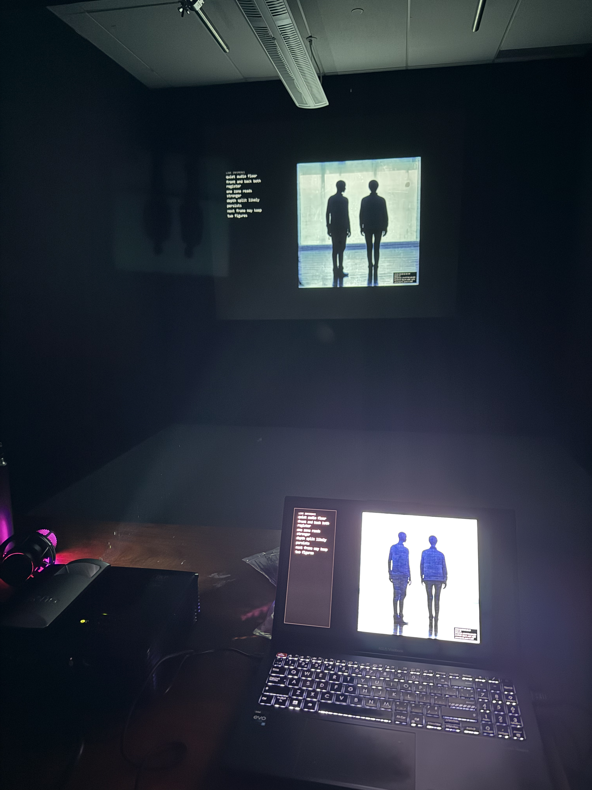
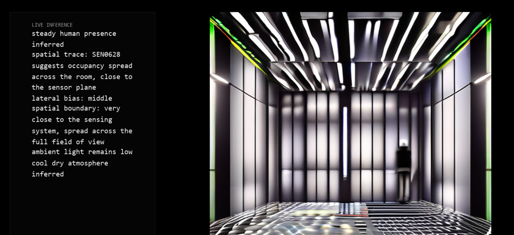
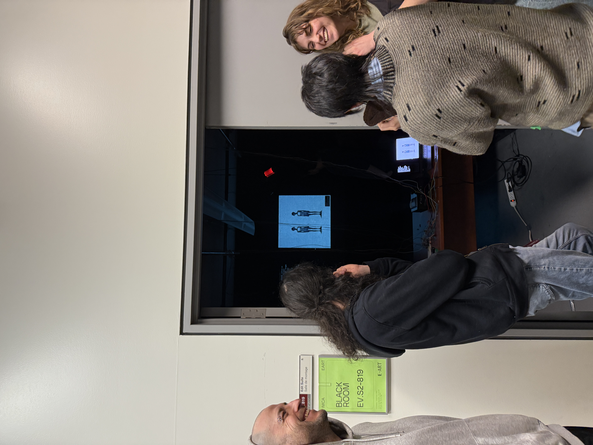
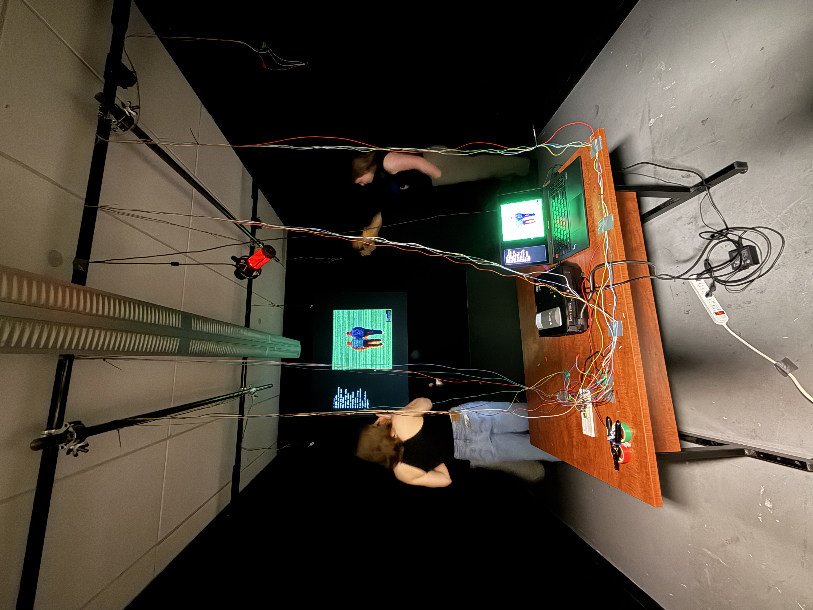
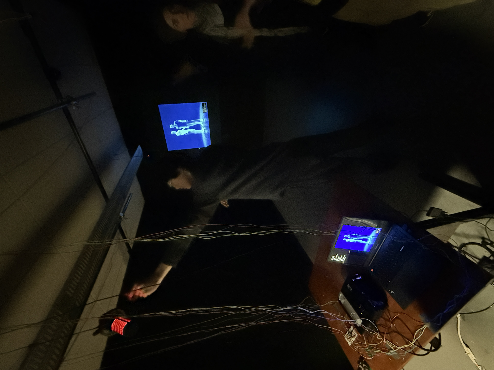

2026 / Installation
Partial Perception
An installation about how inference shapes perception, using partial sensor data to examine how generative AI constructs its own version of reality.
- Generative AI
- Python
- Electronics

Overview
Project description
This installation uses a network of sensors to feed environmental data into an AI interpreter, which then sends its analysis to a Stable Diffusion model. The system generates an image that reflects its best interpretation of what the activity in the room resembles.
The sensors track temperature, humidity, air pressure, motion, distance, and sound. From that accumulated data, the AI estimates how many people are in the space and where they are positioned, then sends that reading to the image model. A new image is projected every 8 to 10 seconds.
The room is staged like the inside of a system. A table holding the microcontroller, projector, and laptop acts as the system's brain, while wires extend to sensors suspended from the ceiling. As people move through the room, the data shifts and the projected image updates with a new interpretation of the environment.
Process
Process
I developed this installation by connecting a Raspberry Pi Pico W and multiple environmental sensors to a Python pipeline that interprets live data from the room. Through iterative testing, I translated motion, distance, sound, and atmospheric readings into prompts for image generation, refining how the system inferred human presence and projected its shifting perception back into the space. This refinement involved an iterative testing process of different seed values, image generation speed cycling, and cognition text honing. The prototyping stage also involved fine-tuning the smoothing of sensor data to produce more adequate results.


Media Gallery
Images and video documentation from the project folder.



